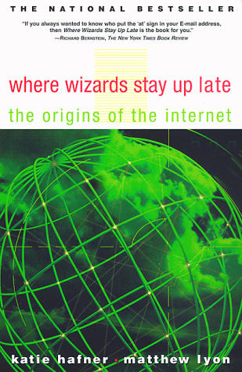

Fred Agbo
November 23, 2026

A small circle of friends at BBN had gotten hooked on Dungeons and Dragons, an elaborate fantasy role-playing game in which one player invents a setting and populates it with monsters and puzzles, and the other players then make their way through that setting. The game exists only in the minds of the players.
Dave Walden got his introduction to the game one night when Eric Roberts, a student from a class he was teaching at Harvard, took him to a D&D session. Walden immediately rounded up a group of friends from the ARPANET team for continued sessions. Roberts created the Mirkwood Tales.
One of the regulars was Will Crowther.
warmup.py filescene_keyNoneNone is
returned by your valid choice functionjson.loads(your string response) to
convert this to nested data structuresCLIENT = NotOpenAI(api_key="yourapikey") # Create the client
chat_completion = CLIENT.chat.completions.create(
messages=[
"Dictionary with payload"
],
model= "model to use",
response_format={"type": "json_object"} # if json requested
)
response_str = chat_completion.choices[0].message.content
"Convert json content to Python data structures""role" and
"content""role" is always set to
"user""content" is assigned the text of your
prompt"gpt-4o-mini"img/scene_key.jpgengineer_storyinfinite_ethics.txt and uploaded along with
your code